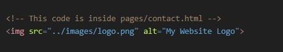

Step 1: The First Principle (The Fundamental Truth)
The most fundamental truth is this: A website is not one single file.
It's a collection of different files (HTML, CSS, JavaScript, images, videos, fonts) that all need to work together. These files are organized into folders, just like documents on your computer.
Step 2: The Core Problem
Now we have a core problem: If your index.html file needs to display an image named logo.png, how does the HTML file tell the browser where to find logo.png?
You can't just say src="logo.png" and expect it to work every time. What if the logo is in an images folder? What if it's on a completely different website?
The browser needs an exact, unambiguous address to locate the file. A file path is that address.
A) Relative File Paths (The Most Important for Your Projects)
A relative file path gives directions to a file starting from the location of the file you are currently in. You will use this 99% of the time for linking your own files together (images, CSS, other HTML pages).

Here are the different scenarios:
Scenario 1: Linking to a file in the SAME folder.
- The Problem: You are in index.html and want to link to about.html.
- The Logic: They are neighbors, living in the same my-website/ folder. The directions are as simple as possible.
- The Syntax: You just use the filename.
Scenario 2: Linking to a file in a SUB-FOLDER (Going Down).
- The Problem: You are in index.html and want to display logo.png.
- The Logic: From index.html, you need to go into the images folder to find the logo.
- The Syntax: You write the folder name, a forward slash /, and then the filename.codeHtml

Scenario 3: Linking to a file in a PARENT FOLDER (Going Up).
- The Problem: You are in contact.html (which is inside pages/) and you want to display logo.png (which is inside images/).
- The Logic: You can't go directly from pages/ to images/. You must first go up one level out of the pages folder to get back to the main my-website/ folder. From there, you can go down into the images folder.
- The Syntax: Two dots and a slash (../) means "go up one level."codeHtml
- ../ takes you from pages/ up to my-website/.
- images/logo.png then takes you down into the images folder to find the file. 